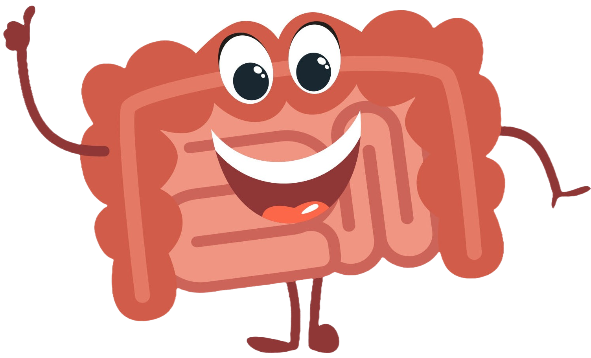

L'intestino Tenue
L'intestino tenue è la sede principale dell'assorbimento dei nutrienti.
Nel primo tratto dell'intestino tenue la digestione prosegue attraverso l'azione di diversi succhi digestivi che vengono mescolati al chimo:
- la bile, prodotta dal fegato;
- il succo pancreatico, proveniente dal pancreas;
- ed il succo enterico, secreto dalle pareti stesse dell'intestino.


A questo punto, le sostanze nutritive sono trasformate in chilo alimentare, un liquido pronto per essere assorbito.